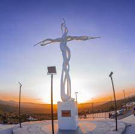
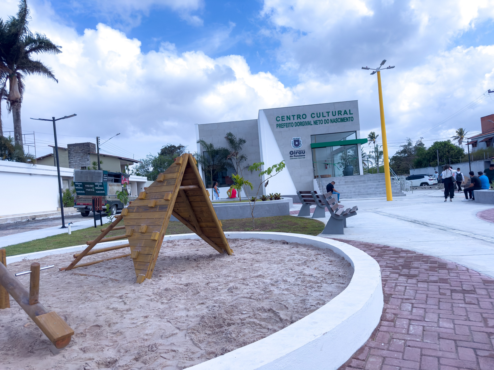

Seja bem-vindo a Girau do Ponciano, um destino acolhedor no coração de Alagoas, onde tradição, cultura e lazer se encontram em perfeita harmonia!
A cidade vem se destacando pelo cuidado com seus espaços públicos e pelo incentivo à cultura local, oferecendo aos visitantes experiências únicas e cheias de identidade.
Lugares que você deve ir:
- Cruzeiro: Recém-inaugurado, o local já se tornou cartão-postal da cidade. Com uma vista encantadora, estacionamento e banheiros à disposição, é o lugar ideal para momentos de paz e contemplação.
- Enokão Parque Desportivo: O coração esportivo do município! O espaço recebe jogos, eventos e grandes finais, como a Copa Girauense de Futebol, reunindo torcedores e famílias em clima de festa.
- Centro Cultural Prefeito Dorgival Neto do Nascimento: Um verdadeiro templo da arte e da memória local. Com obras de artistas regionais, o centro é parada obrigatória para quem quer conhecer mais da história e da criatividade girauense.



